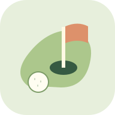

اختر مغامرتك
ضربة صغيرة… وطريق نكتشفه
حديقة الزهور
هذه جولة تدريب؛ جولتك محفوظة.
حرّك المقبض حول الكرة لتوجيه المضرب، ثم اضرب!
توجيه بالأزرار
من ضربة هادئة إلى ضربة أقوى
تقدمي
خذ وقتك. يمكنك المحاولة أو تغيير المسار متى أحببت.

هذه جولة تدريب؛ جولتك محفوظة.
حرّك المقبض حول الكرة لتوجيه المضرب، ثم اضرب!
من ضربة هادئة إلى ضربة أقوى
خذ وقتك. يمكنك المحاولة أو تغيير المسار متى أحببت.
ابدأ بزر واحد للصغير. في المستويات التالية نكتشف الاتجاه والقوة والحواجز. المسار المنقط يعرض نتيجة الضربة المتوقعة حتى تستقر الكرة. لكل لاعب ثلاثة مسارات، والشريك ضيف على الجهاز نفسه. لا مؤقت أو ترتيب للأطفال؛ عدد الضربات وصف للعب. لكل مستوى وعدد لاعبين جولة مستقلة.